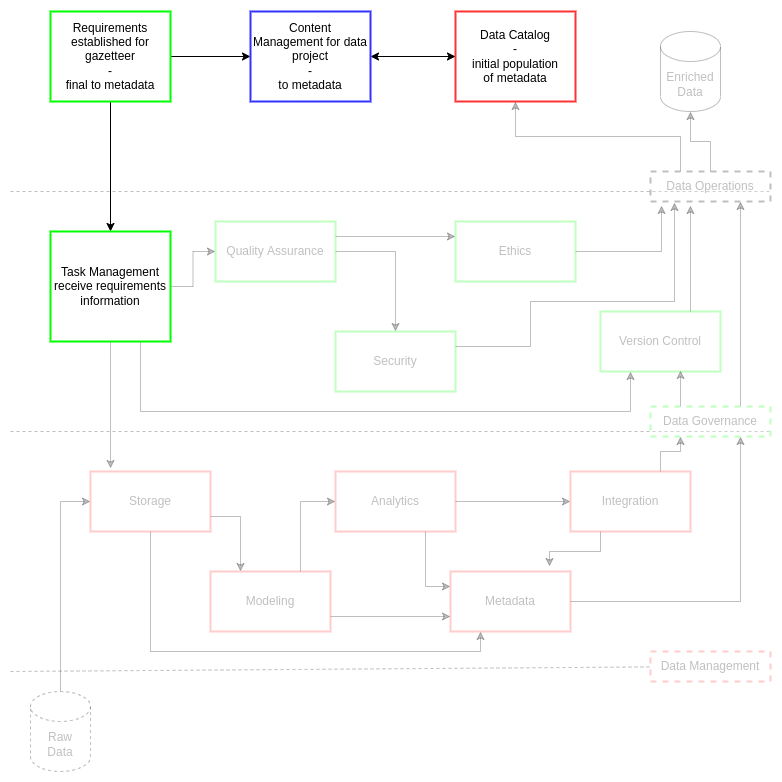
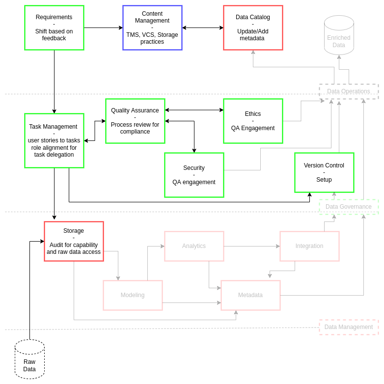
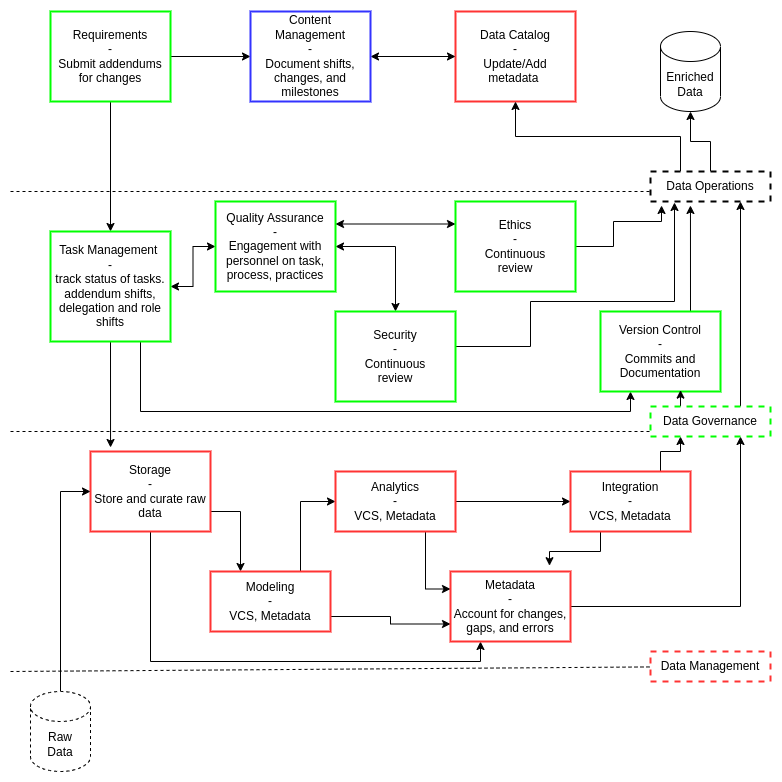
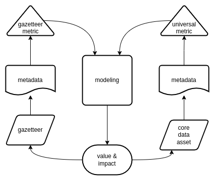

Appendix - Scenario
Contents
Appendix - Scenario¶
ciuTshi in Action¶
For the purpose of demonstrating the use of ciuTshi, we will briefly go through the process of bringing in a new data asset. This will cover data management, data governance, and content management considerations within the scope of a consistent and rigorous data operations workflow. As stated throughout the framework’s modules, organizations will leverage ciuTshi in the way that best fits their master data lifecycle management needs for metadata and value metrics.
This scenario will collect and process a new data asset, resulting in an initial metadata object unique to the organization’s requirements and metrics. This data will then be integrated with other project data, continuing the metadata modeling to demonstrate value impact for the organization.
Verification¶
A project accepted by an institution requires geocoding to facilitate a geospatial analysis of another core project data asset. Project managers approach data operations personnel regarding the project, its scope, and its data requirements. The data operations personnel arrange a requirements workshop in order to solidify the data asset tasks for the project. Data operations reaches out to data architecture (DA) and information technology (IT) management representatives to ensure schedule alignment: they are needed to guide system utilization and personnel resources for project needs. Data operations then conducts a requirements workshop to gather data points: this precedes both tasking and metadata generation for the new data asset.
When the workshops begins, the data operations team leads with clarification on terminology with the customer and helps them translate their requirements and intent into actionable data engineering tasks for the data operations teams.
Why is geospatial analysis needed?
What are the spatial features?
How are you using these spatial features?
Where are you consuming or deploying this data?
Who are your consumers?
When do you need this data?
These task-related questions identify the tentative connection between each requirement’s temporal and monetary cost, its project value, and its effect on the institution’s bottom line. Challenging topics such as knowledge gaps and initial metrics are discussed and addressed before final requirements are issued. The identification of tentative connections between data features and testable metrics of the final data asset deliverable is especially critical as this is the way cost and value justify tasks for measurable impact.
Questions |
Connection |
|---|---|
Why |
Justification, Impact |
What |
Cost, Value, Resources |
How |
Methods, Metrics, Models |
Where |
Architecture, Systems |
Who |
Impact, Value, Cost |
When |
Cost, Systems, Methods |
Once topics of language and value are resolved, the data operations team verifies the tentative finalized requirements with the project customers. This verification process also includes notifications be sent to the customer on the effects of requirement drift if changes are made once the data operations processes begin.
The workshop outcomes determine that a gazetteer is needed to geocode the existing data asset for this analysis. The establishment of the finalized requirements for gazetteer integration initiates three actions: role alignment for task management, creation of new documentation in content management, and creation of metadata objects for the data asset.
Due to ciuTshi’s module connections to data operations roles, initial considerations on personnel resource alignment with tasks must be made prior to module selection and execution. A team member can fill several roles, but this is the time where augmentation of personnel is determined prior to establishing tasks and the final deadline for delivery. It is critical to establish task delegation and delegation contingencies as this directly effects delivery outcomes and timelines.
Reminder: Data project
outcomesare associated with content management documentation that is consumable by a broader non-technical audience despite its technical composition. Data projectstatusis associate more with task management which is covered in the next section.
Data operations leadership leverages the organization’s content management system to communicate the state of the new data asset with tags, labels, and annotations to establish the qualitative analytic layer. This includes information on data governance and data management requirements to be actioned in the coming delivery timeline. Data operations leadership reminds their teams to update content management documents as frequently as possible to ensure communication on data project outcomes with institutional leadership and project stakeholders.
Once roles and documentation are initially drafted and agreed upon, metadata is generated for the new data asset based on initial requirements, content management, and task management efforts. This includes data from the workshop and initial content management documentation elements.

Selection¶
With the requirements for the new data asset established, selection of tasks begins. Data personnel push back on the requirements at this time if needed. The task management team changes requirements into user stories, taking care to capture key metadata points during this process. Project and data operations leadership verify these user stories as their form and function dictate the form and quality of the metadata elements collected on each task. Based on tasks established during user story review, data and project personnel then review the latest ciuTshi module documentation for their associated roles. This review establishes baseline expectations for who works on:
Generating the gazetteer
Coordinating access to the core data asset
Geocoding the required fields
Delivering the new enriched data asset
While reviewing documentation to ensure role and task alignment, quality assurance personnel should be made aware of task management activities and prepare a review of processes. This review process ensures critical quality assurance factors comply with institutional policies on security, ethics and other guidelines. Metadata should capture initial aspects of quality assurance for the new data asset process.
Version control is also initiated for data asset process artifacts. This system captures code and other technical information pertinent to the production of a gazetteer, geocoding, data processing, and other technical practices required by the customer for a sufficient data delivery. The metadata at this point reflects the setup of version control to the documented rubric standard (extended by each organization as needed).
Data storage is setup and deployed as required. This initial data management process ensures raw spatial data can be stored in the DA and IT system as outlined in the requirements. The ciuTshi documentation guides baseline considerations for this, assisting in metadata generation on storage practices for the data asset.

Collection¶
Collection and processing of the data asset begins once personnel and tasks are aligned. At this point, the data engineering team proceeds with the assigned data management tasks. Additional review of ciuTshi modules associated with data management guide population of metadata for their associated tasks. Fill out as much metadata as possible, but DO NOT make up data or fill in empty spaces.
Note: Gaps in metadata collection are okay. ciuTshi is not stating you need to fill in all fields: teams and organizations may have different processes and systems resulting in very different metadata. The goal is consistent and rigorous metadata collection that reflects your unique data practices.
At this point, data professionals may find that module templates and rubrics cannot account for some aspect of their data processes. Any changes should be noted in content management and monitored within the data catalog.
Note: ciuTshi modules and their metadata artifacts are extensible. If changes need to be made based on new findings, it is important to ensure backward compatibility with older ciuTshi metadata objects. Maintaining metadata objects while adding to them ensures data provenance and legacy for data assets are maintained.
Note: Issues should be posted to ciuTshi’s repository for significant updates to the modules, templates, and rubrics. This helps everyone as data engineering practices, and their metadata, are always growing and shifting.
Care is taken to maintain guidance on quality assurance, security, ethics, and other data governance practices throughout data management activities. These interactions may affect both delivery outcomes and metadata curation associated with enriching the geocoded data asset, so update metadata as frequently as needed to reflect the latest guidance. Content management documentation is also updated as needed based on major milestones outlined by task management.
If requirements change, regardless of major or minor shifts, an addendum is submitted and documented to ensure tracking of this shift via the metadata and content management documentation.

Modeling¶
Note: This modeling section is NOT the same as the one in the above diagrams. This section is the metric modeling of the metadata that resulted from all data management, data governance, and content management processes.
At this point, the data team produced a gazetteer and geocoded data that meets the enrichment standards outlined in the requirements. The data catalog contains a metadata object for the gazetteer data completed to the best ability of data operations team as a result of persistent module completion and updates. We can now proceed with modeling the metadata. We must now assess the impact and value of the data asset.
When forming the requirements through workshops and detailed outlines, data operations personnel gathered some initial metrics concepts from project management and customers. These metrics may overlap with institutional metrics that apply to all data assets and already exist in production for data operations. A review is performed to ensure existing metrics cannot be used to accelerate outputs on value and impact. This review ensure metadata is sufficiently populated with the requisite data for a model once the metrics is selected.
Modeling the data asset with the appropriate metrics is critical as its connection to institutional value and project impact will be managed and monitored. As part of the master data management lifecycle for the data asset and data utilities which depend on the asset, data operations personnel in charge of modeling metadata metrics must determine the model is connected to a measurable form of value for the institution. The model category guides this initial consideration as a review of tags and labels will help establish the types of models best suited to define the required metric. In some cases, a universal metric (e.g., a metric applied to all data assets) may be sufficient for demonstrating value and impact.
The scope of the model is a key consideration. Data operations personnel account for the types of value and impact through careful consideration of quality, interconnection to other data assets, customer application metrics, and other pertinent variables: covering internal and external factors that may prove the scope of value and the scale of impact. If the data asset is part of a data mesh, what DA and IT factors accounts for value shifts or variation on project impact? The inclusion of qualitative factors from content management help guide this, but a deep literature review aids appropriate selection and later justification of model validity.
In this scenario, the gazetteer data was leveraged to geocode one data set for advanced analysis. The initial consideration is the direct project impact: what was the value gained by this analysis? Starting with impact, we have: data operations labor hour, system resources leveraged, deliverable timelines, and customer cost for this task. These variable would give us a baseline budget impact for the project and justification for pursuing this course of action for leadership and stakeholders. Extending this, longitudinal studies can be conducted (so long as the ciuTshi metamodel is properly extended) to analyze the effects of geospatial analysis on other data with similar features to the project’s core data asset but leveraging the gazetteer beyond its initial requirements (within proper security and ethics guidelines).
Once the model is assessed, processed, and tested, content management and version control documentation should be updated. This update will feed the additional metadata fields for the gazetteer and the core data asset. A write-up in the content management system follows this as leadership and stakeholder will need a review of proof that the metrics are valid. Model review will be covered in the next section in greater detail, but a consideration prior to this is review of other team metrics outside of data operations that may overlap with with ciuTshi-derived metrics. Understanding the extended users of a data product and their unique metrics and heuristics can aid in fixing metric errors and bolster the value proposition for the data asset. A key goal of ciuTshi is documenting these metric link in your metadata as both proof of metric utilization and linkage between data operations to the larger organization.

Proof¶
The model is tested thoroughly in-house to ensure internal team members can securely verify the metrics and their asserted outcomes. Sanity checks, review panels, and other team events ensure the metrics and their outcomes are understandable and are able to be cross-validated. If issues arise during this process, a deeper review of the data asset, its metadata, and the metric may be required to ensure process rigor, data consistency, and model scope pass established quality benchmarks. The model results must be reproducible by other team members and the model must be tested for transferability between different systems. These checks ensure execution of the model between internal systems of varying security as well as utilization of the model by customers and stakeholders.
Once data team reviews are complete, leadership and stakeholders assess the outcomes and decide if those metrics are sufficient for their needs. If the metrics are in need of additional inputs, external validation may be required. Prior to external assistance, security and ethics check should be reviewed to ensure access and review are conducive to the institution’s policies and agreements. External review, or peer review, may elucidate certain data elements and model features that critically impact the model outcomes. Peer review also reinforces transferable practices for models as well as ensuring diverse perspectives on particular data challenges.
In the case of the gazetteer and its use in geocoding the core data asset for the project, proof of the value and impact of the data operation expands on traditional models of process efficiencies and knowledge enrichment. The optimal scenario is that core asset data points are geocoded, the analysis is completed, and the customer is able to advance their project operations and institutional goals. However, a peer reviewer finds an additional data feature present in the core data asset that when geocoded misrepresents features not in the original model proof. Though this does not affect the customer immediately, it may have cascading effects on later metadata production and model validation.